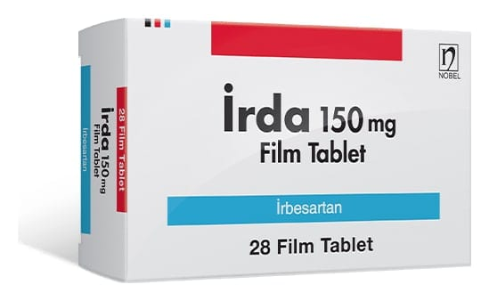

Irda 150 mg Film Tablet, 90 Adet

Ne için kullanılır
KT · Bölüm 1İRDA 150 mg irbesartan etkin maddesini içerir. Anjiyotensin II reseptör antagonistleri olarak bilinen bir tansiyon düşürücü ilaç grubuna dahildir. Anjiotensin-II vücutta üretilen bir maddedir. Kan damarlarında bulunan reseptörlere bağlanarak kan damarlarının daralmasına yol açar. Kan damarları daralınca içinde dolaşmakta olan kanın basıncı artar. İRDA, anjiyotensin-II adlı bu maddenin reseptörlere bağlanmasını engeller. Bu şekilde kan damarlarını gevşetir ve kan basıncını düşürür. İRDA, yüksek tansiyon ve tip 2 diyabet (şeker) hastalarında, böbrek fonksiyonlarındaki azalmayı yavaşlatır.
28 ve 90 film tablet içeren blister ambalajlarda kullanıma sunulmaktadır. Piyasada ayrıca İRDA 75 mg ve 300 mg film tablet formları da mevcuttur.
Doktorunuz size İRDA ’yı aşağıdaki nedenlerden biri veya birkaçı dolayısıyla reçetelemiş olabilir: Yüksek kan basıncı tedavisinde (esansiyel hipertansiyon)
Uyarılar ve önlemler İRDA aldıktan sonra karın ağrısı, bulantı, kusma veya ishal yaşarsanız doktorunuzla konuşun. Doktorunuz daha ileri tedaviye karar verecektir. İRDA almayı kendi başınıza bırakmayınız. Yüksek kan basıncı, tip 2 diyabet (şeker) ve böbrek fonksiyonu bozulmuş olan hastalarda böbreklerin korunmasında